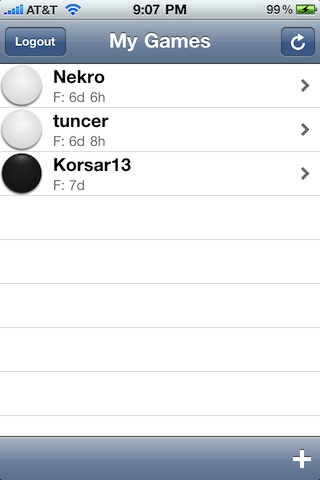
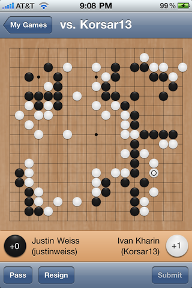
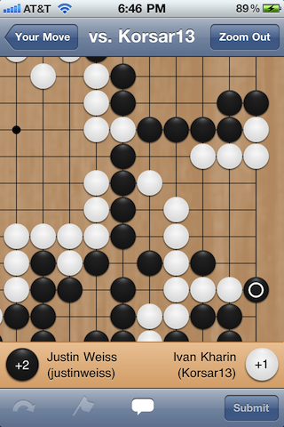
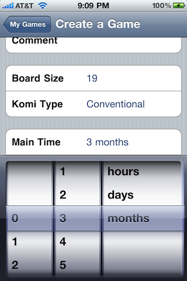

Dragon Go Client is the easiest way to play Go on the Dragon Go Server from your iPhone!
The Dragon Go Server is a place where people around the world can get together and play the game of Go. Dragon Go Client is the fast, simple way to catch up on your games on the iPhone.
 
 
My name is Justin Weiss, and I'm a software developer from Seattle. I currently work at Avvo, which you should definitely check out if you're trying to find a doctor or a lawyer, or need legal or medical advice.
Dragon Go Client is open-source and released under the BSD License. The source is available on GitHub, and I'm available by email or messaging if you have any questions.
If you have any questions, comments, or suggestions, don't hesitate to contact me on Twitter (@justinweiss) or via email.
This app depends on the following projects, whose authors are all awesome and amazing:
* Copyright (c) 2007-2010, All-Seeing Interactive
* All rights reserved.
*
* Redistribution and use in source and binary forms, with or without
* modification, are permitted provided that the following conditions are met:
* * Redistributions of source code must retain the above copyright
* notice, this list of conditions and the following disclaimer.
* * Redistributions in binary form must reproduce the above copyright
* notice, this list of conditions and the following disclaimer in the
* documentation and/or other materials provided with the distribution.
* * Neither the name of the All-Seeing Interactive nor the
* names of its contributors may be used to endorse or promote products
* derived from this software without specific prior written permission.
*
* THIS SOFTWARE IS PROVIDED BY All-Seeing Interactive ''AS IS'' AND ANY
* EXPRESS OR IMPLIED WARRANTIES, INCLUDING, BUT NOT LIMITED TO, THE IMPLIED
* WARRANTIES OF MERCHANTABILITY AND FITNESS FOR A PARTICULAR PURPOSE ARE
* DISCLAIMED. IN NO EVENT SHALL All-Seeing Interactive BE LIABLE FOR ANY
* DIRECT, INDIRECT, INCIDENTAL, SPECIAL, EXEMPLARY, OR CONSEQUENTIAL DAMAGES
* (INCLUDING, BUT NOT LIMITED TO, PROCUREMENT OF SUBSTITUTE GOODS OR SERVICES;
* LOSS OF USE, DATA, OR PROFITS; OR BUSINESS INTERRUPTION) HOWEVER CAUSED AND
* ON ANY THEORY OF LIABILITY, WHETHER IN CONTRACT, STRICT LIABILITY, OR TORT
* (INCLUDING NEGLIGENCE OR OTHERWISE) ARISING IN ANY WAY OUT OF THE USE OF THIS
* SOFTWARE, EVEN IF ADVISED OF THE POSSIBILITY OF SUCH DAMAGE.
A different license may apply to other software included in this package,
including GHUnit and Andrew Donoho's Reachability class. Please consult their
respective headers for the terms of their individual licenses.
The following terms and conditions apply strictly to the
Touch XML Library, available through the MIT Open Source Initiative.
The MIT License
TouchXML Library
Copyright (c) 2009 Jonathan Wight
Permission is hereby granted, free of charge, to any person obtaining
a copy of this software and associated documentation files (the
"Software"), to deal in the Software without restriction, including
without limitation the rights to use, copy, modify, merge, publish,
distribute, sublicense, and/or sell copies of the Software, and to
permit persons to whom the Software is furnished to do so, subject to
the following conditions:
The above copyright notice and this permission notice shall be
included in all copies or substantial portions of the Software.
THE SOFTWARE IS PROVIDED "AS IS", WITHOUT WARRANTY OF ANY KIND,
EXPRESS OR IMPLIED, INCLUDING BUT NOT LIMITED TO THE WARRANTIES OF
MERCHANTABILITY, FITNESS FOR A PARTICULAR PURPOSE AND
NONINFRINGEMENT. IN NO EVENT SHALL THE AUTHORS OR COPYRIGHT HOLDERS BE
LIABLE FOR ANY CLAIM, DAMAGES OR OTHER LIABILITY, WHETHER IN AN ACTION
OF CONTRACT, TORT OR OTHERWISE, ARISING FROM,OUT OF OR IN CONNECTION
WITH THE SOFTWARE OR THE USE OR OTHER DEALINGS IN THE SOFTWARE.
Fuego is licensed under the LGPL.
And, of course, the Dragon Go Server, which makes all of this possible.